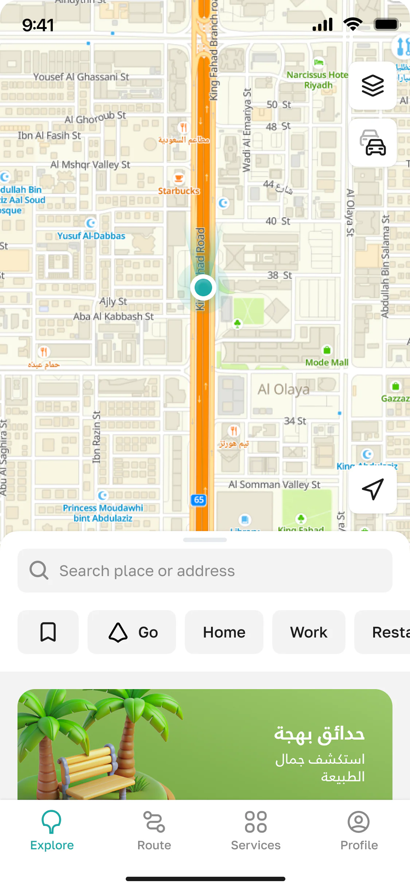
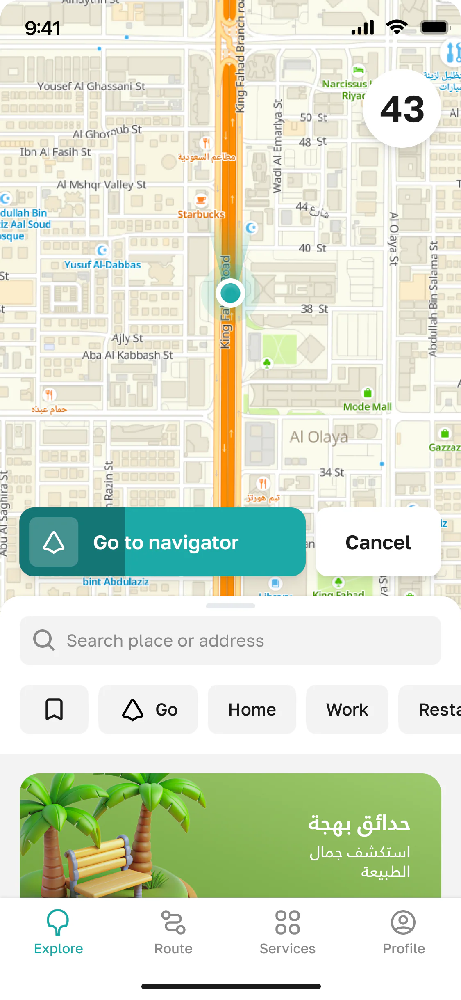
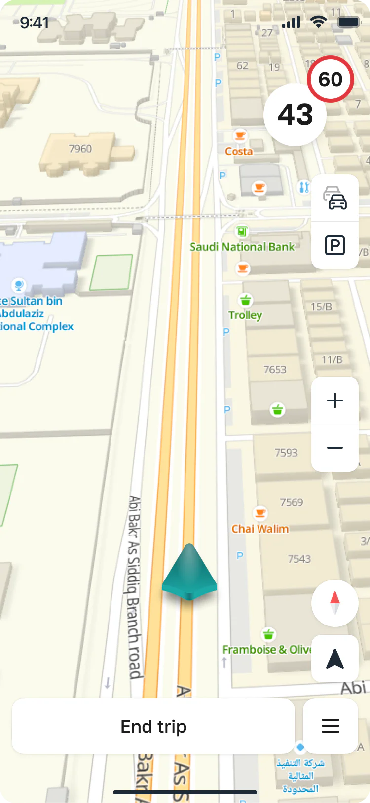
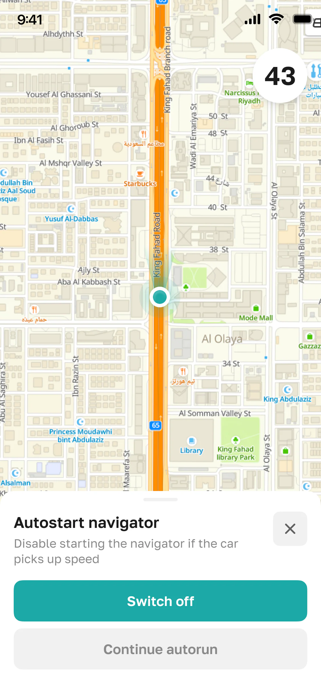
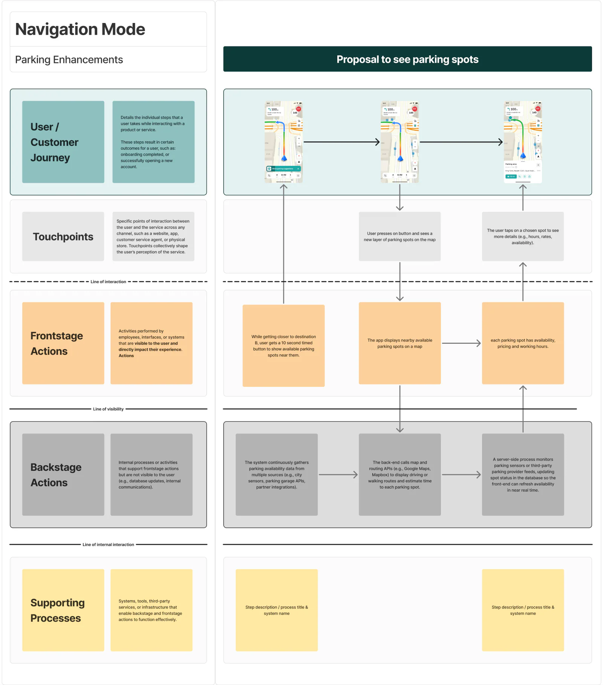
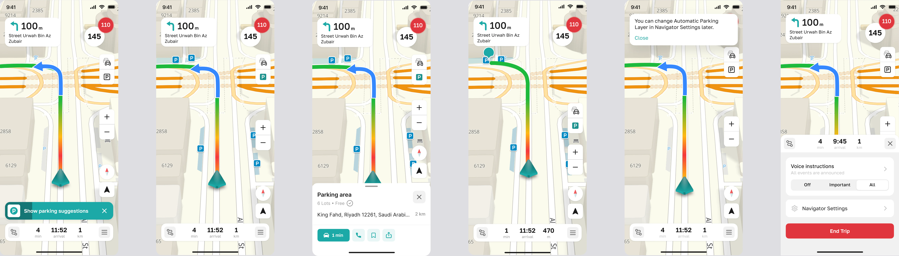
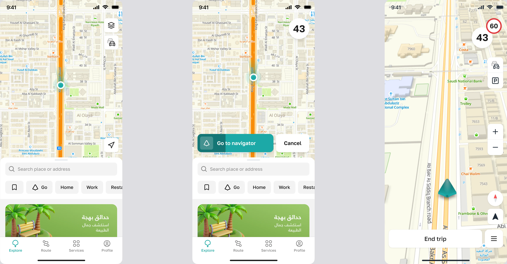
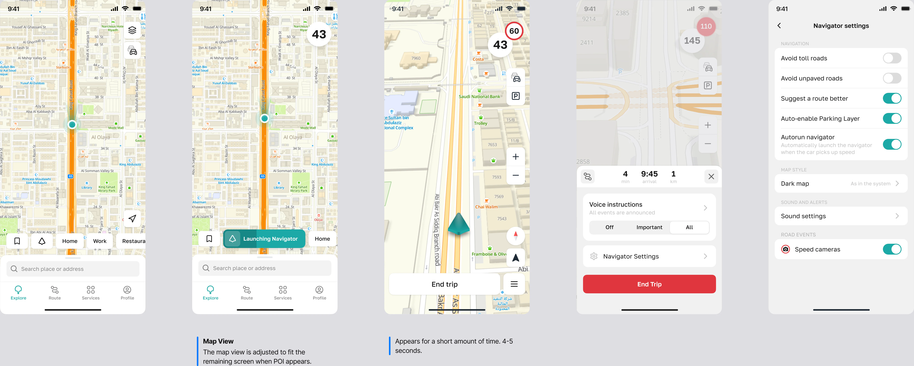

Balady+ Maps
Redesigned the navigation experience for Saudi Arabia's official government maps app, turning a destination-only tool into a fluid map experience for thousands of users.
Designed for the city, built for everyone




Where it all started
Balady+ is Saudi Arabia's official government maps and municipal services app, used by thousands of users to navigate cities, report issues, and access government services.
My role focused on two core experiences: a redesigned parking flow, and the introduction of a free roam feature that let users explore the map without needing a destination.
Both had gone unresolved for too long, each making the map harder to use than it needed to be.
What I was solving for
The goal was to make the map feel less like a transactional tool and more like a spatial interface, fluid whether you were navigating or just exploring.
Why do I have to enter a destination just to look around?
Why does this feel harder than it needs to?
The core design challenges
- Introduce exploration without breaking the navigation flow
- Make finding and paying for parking effortless
- Keep users in the map, no detours to other screens
"These weren't isolated UI problems. They reflected a fundamental mismatch between how users wanted to interact with the map and how the app was designed."
Design insight, Balady+ discovery phase
How I approached it
Before designing anything, I mapped the complete user journey across every navigation scenario to understand exactly where and why the experience broke down. A service blueprint became the foundation for both features.
The journey
-
Discovery & field research
Observed real navigation sessions and interviewed users to understand where the experience felt unnatural.
-
Service blueprint
Mapped the full navigation journey to pinpoint where parking and exploration broke down.
-
Solution design
Designed the parking and free roam experiences in parallel, keeping both anchored to the live map.
-
Prototyping & testing
Tested with real users to validate the parking flow and free roam transitions before shipping.
-
Launch
Both experiences shipped to thousands of users across Saudi Arabia.
Service Blueprint
I mapped the complete user journey across every navigation scenario to identify where and why the experience broke down. This gave the team a shared understanding of the problem space before any solutions were explored.

Parking Enhancements
Finding parking was one of the most common urban use cases. The redesigned flow surfaces parking suggestions right on your route, tap to reveal nearby lots with availability, distance, and pricing, then reroute to your chosen spot in a single tap, without ever leaving the map.

Free Roam Mode
A new exploration mode that lets users browse the map without a fixed destination. The transition between free roam and navigation is seamless, tap any point of interest to get directions, or tap navigate to start from your current location.

Free Roam controls
A focused set of map controls keeps exploration effortless, recenter, zoom, and layer toggles stay within thumb reach without crowding the map. The controls fade back when you're moving, and return the moment you pause to look around.

What happened next
Both experiences shipped nationwide, in an app serving 3.7 million citizens.
- Free roam introduced a new usage pattern, users exploring without a destination
- Parking flow fully integrated, no extra screen, no leaving the map
- Real-time parking availability and payment surfaced directly on the map
- Seamless transition between exploring and navigating
Looking back
What started as two isolated feature requests turned into a rethink of what a government map app could be.
The biggest design shift was recognising that the map was two products in one, a navigation tool and an exploration surface. Designing for both without creating tension between them was the real challenge.
It reinforced that scale doesn't make design harder. It makes clarity more important.
Want to talk through the details?
Happy to walk through the research, the design decisions, and what didn't make the cut.
Get in touch